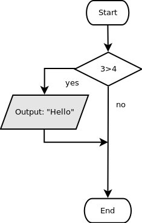

Untuk dilakukan:
Susunlah blok program sehingga sesuai dengan flowchart di bawah ini, kemudian tekan tombol evaluate:

Walaupun kondisi harus diberi nilai boolean, namun kita bisa juga menggunakan operasi perbandingan untuk menciptakan nilai boolean. 3>4 akan menghasilkan nilai false.